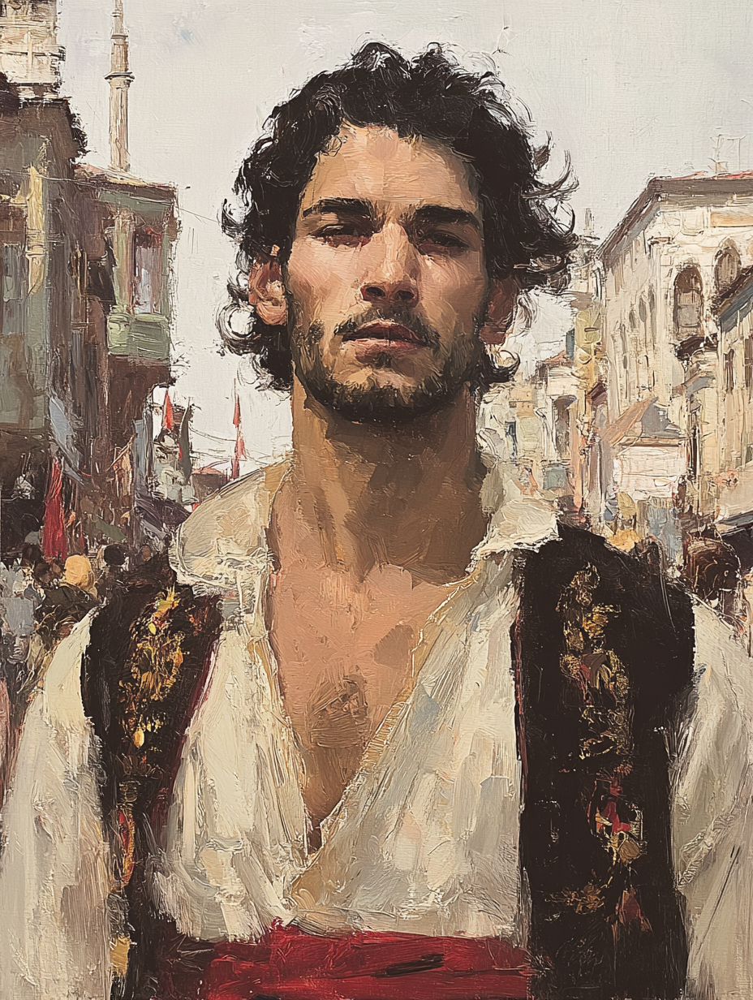

Hassan Al-Kabir
Street-King of the Lower Quarters · Urban Vagabond

Turkish · Aged Thirty-Four
On the Subject
Hassan roams the back alleys of Constantinople, upholding his own brand of justice among the marginalized communities. He grew up in those same alleys — orphaned young, raised by the network of vendors, beggars, and corner-prophets that the city's poor have been quietly maintaining for centuries.
He came up tough and he came up fast, and the older he gets, the less patience he has for the well-dressed men in the upper districts who think the lower city is theirs to walk through. He is feared and respected by the street vendors he protects in equal measure. His temper is famous. He does not deny it.
Faculties & Saving Throws
Base array 17, 14, 11, 10, 9, 8; Human +1 to each; Urban Hunter feat +1 Wis
Bearing in the Field
Skills
| Skill | Bonus | Source |
|---|---|---|
| Athletics | +6 | Barbarian |
| Intimidation | +1 | Barbarian |
| Perception | +3 | Human |
| Sleight of Hand | +3 | Urchin |
| Stealth | +3 | Urchin |
| Survival | +3 | Urban Hunter feat |
Class Features
Lasts 1 minute, or until ended, until he is incapacitated, or until he goes a turn without attacking a hostile creature or taking damage. Benefits while raging:
- Advantage on Strength checks and Strength saving throws
- +2 damage on melee Strength-based weapon attacks
- Resistance to bludgeoning, piercing, and slashing damage
- Cannot cast spells or maintain concentration
When not wearing armor, AC = 10 + Dex + Con (already factored into AC 13).
On his turn, can attack recklessly: gain advantage on melee Str attacks this turn; all attacks against him have advantage until his next turn.
Advantage on Dexterity saves against effects he can see (traps, area spells, etc.), as long as he isn't blinded, deafened, or incapacitated.
When he rages, he invokes fear in his enemies' hearts. Up to 2 creatures (Con mod) within 60 ft. that he can see make a Wisdom save vs DC 14 (8 + PB 2 + Str 4) or be frightened for 1 minute. Affected creatures may repeat the save at the end of each of their turns.
Feat
Proficiency in the Survival skill. When he takes the Search action or makes a Survival check to analyze clues and tracks in an urban area, he can learn the creature's type (humanoid, fiend, djinn, beast, etc.).
Hassan reads the city itself — the chalk marks on doorways, the way a fruit cart was upended an hour ago, who walked through an alley and how recently.
Background — Urchin
Hassan knows the secret patterns and flow of Constantinople. He can lead his companions through the city at twice the normal travel pace between any two locations within its walls, using hidden routes — rooftop runs, basement tunnels, courtyards behind certain shops where the owners look the other way, the dry sections of cisterns no one official remembers exist.
Disguise kit and thieves' tools (Urchin).
Equipment
- Mamluk Kilij — greatsword stats: 2d6 slashing, heavy, two-handed; +6 to hit / 2d6+4; heavy curved Ottoman saber, taken off a Mamluk corsair he killed in his early twenties
- Hanchar × 2 — 1d4 piercing, finesse, light, range, thrown 20/60; +6 to hit / 1d4+4; utility daggers, one on his belt, one in his boot
- Handaxe × 2 — 1d6 slashing, light, thrown 20/60; +6 to hit / 1d6+4; secondary; can be thrown
- None — Unarmored Defense; carries no shield by default, but one is available if he wants AC 15 for a particular fight
- Disguise kit — worn, light — mostly used for changing class appearance rather than identity: scholar's vest, vendor's apron, dockworker's coat
- Thieves' tools — Urchin
- Urchin pouch — a small leather pouch with a city map of Constantinople he drew himself, three knucklebone dice, a key to a door he won't say where
- Common clothes — deliberately unmemorable
- Neighborhood tokens — a small token from each major neighborhood he protects — markers of trust, recognized by locals who know what they mean (a flat copper coin from the Spice Bazaar vendors, a brass button from the Galata dockworkers, a strip of green ribbon from the Greek quarter laundresses, etc.)
- Safe room off the Hippodrome — bedroll, weapon cache, a chest of his belongings
Personality
I will fight you over an injustice to a man I have never met before, and I will buy you a drink afterward if you fought well.
The state won't protect the people who need protecting. So someone has to. That someone is me, and the people like me.
The vendors and beggars who raised me when I had no family — they are my family. I will spill blood for any of them. I have, more than once.
My temper is real, and it does not always wait for me to think. I have started fights I should have walked away from, and I will start more before I die.
Connections
- Knows Ayla Sürgün from encounters in Constantinople's underground during her espionage work.
- Protected Miriam the Chronicler when she was cornered by thieves in the city.
His knowledge of the streets and ability to protect the group would be invaluable in dealing with any dangers at the dig.